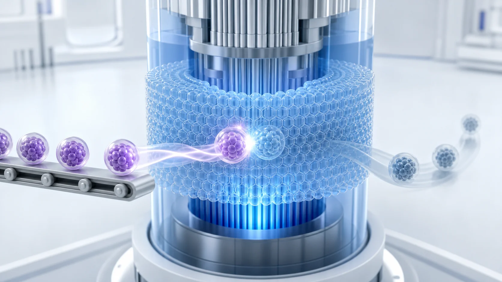
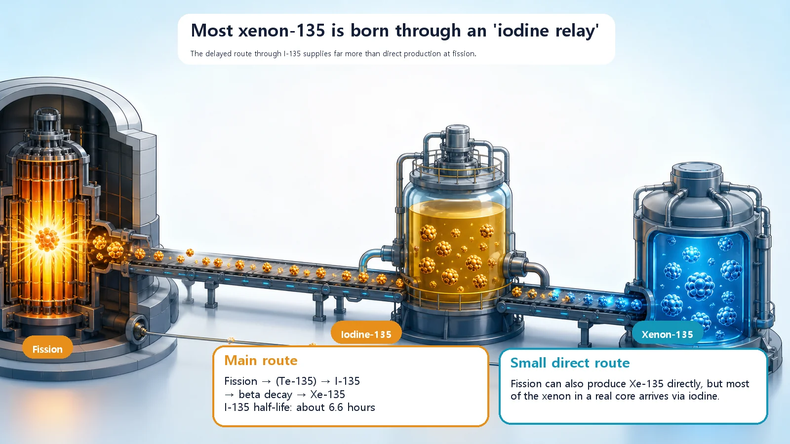
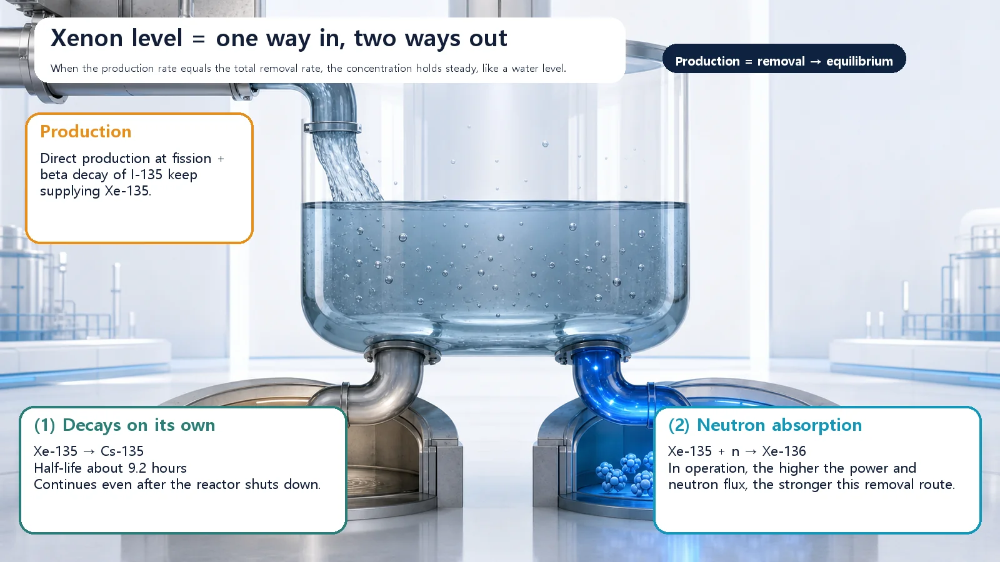

Long-Term Core Behavior & Fuel Cycle · 161
Born from Iodine, Erased by Neutrons — How Xenon-135 Is Made and Removed
Xenon-135 is constantly being made and constantly disappearing; like a sink with the tap and the drain both open, its level settles where the two rates match.

Xenon-135 is a fission product that absorbs thermal neutrons extremely well (about 2.6 million barns). Most of it is made indirectly, as iodine-135 decays with a half-life of about 6.6 hours, and it is removed in two ways: by its own decay (half-life about 9.2 hours) and by absorbing neutrons. At constant power, production and removal balance and the xenon level settles at equilibrium.
Picture a sink with the tap half open. Water keeps pouring in, but the drain is open too, so water also keeps flowing out. At some point the level stops moving and holds steady. That's because the amount coming in has become equal to the amount going out. Inside a nuclear reactor there is one very special guest that behaves exactly like this: it is constantly being created and, at the same time, constantly disappearing. Its name is xenon-135. Today we'll look at how this guest is born and how it leaves, the household accounts of its production and removal.
A tiny amount that shakes the whole game
Xenon-135 is a radioactive substance that appears naturally whenever fission happens. Nobody makes it on purpose; it is one of the fragments that tag along automatically as a by-product of fission. These by-products are collectively called fission products.
What makes this particular guest stand out is that its appetite for neutrons is almost beyond imagination. A reactor runs by having neutrons strike fuel and keep fission going, and xenon-135 snaps those neutrons up along the way. How hungry is it? The quantity that describes how readily a nucleus grabs a neutron, called the absorption cross section, reaches about 2.6 million barns for xenon-135. A barn is a unit of area that measures the size of the "target" a single nucleus presents to a neutron; the bigger the number, the better it is at catching neutrons. For comparison, boron, famous in reactors as a strong neutron absorber, is at about 3,840 barns. Xenon-135 is a glutton of an entirely different order of magnitude. That's why even a very small amount in the core noticeably pushes down reactivity (a measure of how strongly the reactor "wants" to keep the chain reaction going).
It passes through someone else's hands before it is born
Xenon-135's first twist is the way it is born. Most xenon-135 does not pop straight out of fission; it arrives by way of a middleman.
When fission happens, one of the fragments produced in fairly large quantities is iodine-135. Iodine-135 isn't stable, so over time it changes by itself into another substance (this is radioactive decay). It decays slowly, with a half-life of about 6.6 hours, and turns directly into xenon-135. A half-life is the time it takes for half of a substance to change into something else. So a large share of the xenon-135 in the core isn't "a child born directly of fission" but "a parcel that iodine handed over at its own pace."
There is also a route where xenon-135 comes straight out of fission. But that share is very small, and in practice far more arrives through iodine. In summary:
Fission → iodine-135 → (slow decay, about 6.6 hours) → xenon-135
Because iodine hands over xenon leisurely, on its own schedule, xenon doesn't respond right away when reactor power is changed suddenly; it follows a beat behind. That story goes one step beyond today's topic of production and removal, though, so for now just remember this: xenon arrives through iodine, with a time lag.

Two doors out
Now the removal side. Xenon-135 is also busily disappearing, by two routes at the same time.
The first door is decaying on its own. Xenon-135 is also unstable, so even if left alone it undergoes beta decay with a half-life of about 9.2 hours and becomes another substance, cesium-135. This route doesn't care whether the reactor is running or shut down; as long as xenon-135 exists, it proceeds steadily according to its internal clock.
The second door is disappearing by absorbing a neutron. Remember that xenon-135 is a neutron glutton? Precisely because of that, once it swallows a neutron it turns into xenon-136, a well-behaved substance. This route works only when there are lots of neutrons in the core, that is, when the reactor is running actively. The higher the power and the more neutrons there are, the more xenon leaves through this door.
So xenon-135 exits through two doors at once: an internal clock (decay) and outside neutrons (absorption). One ticks along regardless of the reactor's state; the other gets stronger or weaker depending on how hard the reactor is working.
Out as fast as in, and the amount stays put
Back to the sink. On one side, xenon-135 is constantly being made through iodine (and, a little, directly). On the other, it constantly drains away through two outlets, decay and neutron absorption.
When a reactor runs steadily at constant power, it eventually reaches the point where the rate of production exactly equals the rate of removal. From then on, the amount of xenon-135 in the core neither rises nor falls; it stays constant. This state is called equilibrium, just like the moment the sink's water level stopped moving. Running at the same power for roughly two days (40 to 50 hours) brings xenon close to this equilibrium concentration.
Put very simply:
Rate at which xenon-135 is produced ≈ rate at which xenon-135 is removed → amount of xenon in the core stays constant
The level at which this balance settles depends on how hard the reactor is running (how many neutrons there are). That's why reactor designers calculate in advance how many neutrons this equilibrium xenon will eat and set aside enough margin for it. They build the house knowing from the start that an invisible guest will always be sitting in a corner of the core, nibbling away at neutrons.

Easily confused neighbors
A few neighbors often get mixed up with xenon-135.
First, iodine-135 and xenon-135 are different substances. Iodine is the upstream supplier that makes xenon; the fearsome neutron glutton is xenon. Iodine itself has little effect as an absorber.
Second, xenon-135 is sometimes confused with samarium-149. Both are poisons produced by fission, but xenon has a short half-life and eventually disappears by decay once the reactor stops, whereas samarium is stable and lingers for a long time. They are quite different guests, so samarium deserves its own separate discussion.
Finally, it's easy to treat fission-product poisons like xenon-135 as the same thing as boron or gadolinium, but they start from different places. Xenon-135 is a poison that appears by itself whenever fission happens, without anyone adding it, while boron and gadolinium are materials designers deliberately put in to control reactivity. One is an unwelcome guest who shows up uninvited; the other is a guest you invite in. And one more thing: xenon-135 is indeed a gas, but that doesn't mean it causes trouble by physically clogging the core. Its effect comes entirely from absorbing neutrons, not from blocking the way like bubbles.
Today's takeaways
- Xenon-135 is a radioactive substance produced naturally by fission and a leading fission-product poison, absorbing thermal neutrons overwhelmingly well (about 2.6 million barns).
- Most xenon-135 doesn't come straight from fission; it is made one step removed, as iodine-135 (half-life about 6.6 hours) decays.
- Xenon-135 is removed in two ways: decaying on its own (half-life about 9.2 hours, becoming cesium-135) and disappearing by absorbing neutrons.
- At constant power, once production and removal rates match, the amount of xenon in the core reaches equilibrium (in roughly two days), and designers account for this share in advance.
- Keep iodine-135 (the supplier) and xenon-135 (the glutton) apart, and likewise naturally arising fission-product poisons and deliberately added burnable poisons.
Once you know about this invisible guest who always sits in a corner of the core eating neutrons, it becomes a little clearer why nuclear plants start out holding generous reserve reactivity, and why they don't change power carelessly or abruptly.